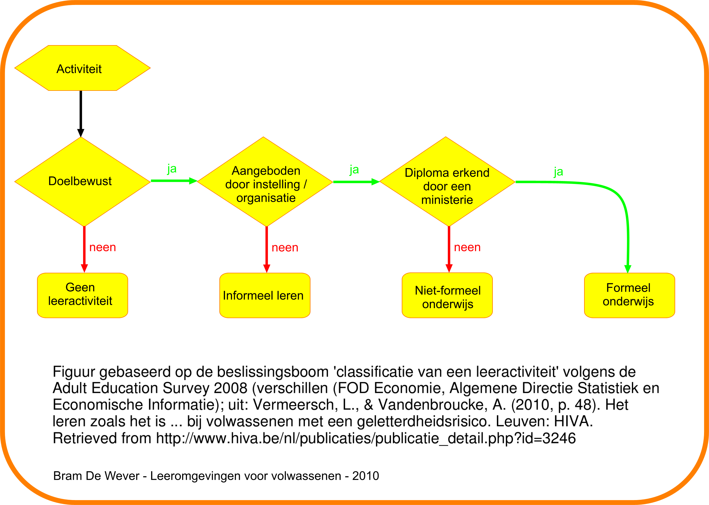

Leeractiviteiten voor volwassenen
- Formeel leren
- Nonformeel leren
- Informeel leren
Boeren, E., & Nicaise, I. (2009). 'Onderwijs voor volwassenen: wie neemt deel en waarom? In L. Vanderleyden, M. Callens, & J. Noppe, De sociale staat van Vlaanderen 2009 (pp. 315-330). Brussel: Studiedienst van de Vlaamse Regering.
Formeel leren
- Geïnstitutionaliseerde context
- Scholen en opleidingsinstellingen
- Certificaat of diploma
- Mogelijkheid tot inschrijven cursus van een volgend niveau
- Voorbeeld: tweedekansonderwijs
Nonformeel leren
- Ook in geïnstitutionaliseerde context
- Maar geen certificaat of diploma
- Mogelijks een attest van deelname, maar dit heeft geen civiele waarde
- Voorbeeld: Vorming Plus (vroegere volkshogescholen)
Informeel leren
- Spontaan
- In alledaagse leven
- Zowel intentioneel als niet-intentioneel
- Voorbeelden: lezen krant, informatieve conversaties
Leeractiviteiten voor volwassenen
- Formeel leren
- Nonformeel leren
- Informeel leren
--> Samengevat onder de noemer levenslang leren (Boeren & Nicaise, 2009)
(Boeren & Nicaise, 2009)
Beslissingsboom terminologie Adult Education Survey 2008

{kind=link}